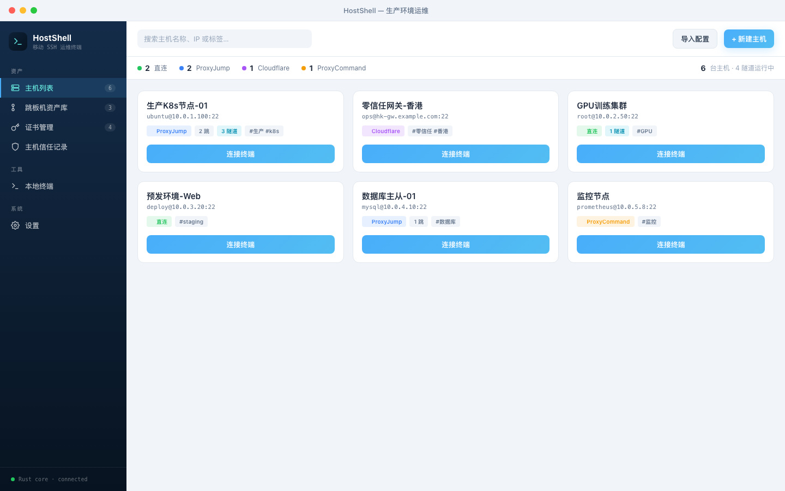
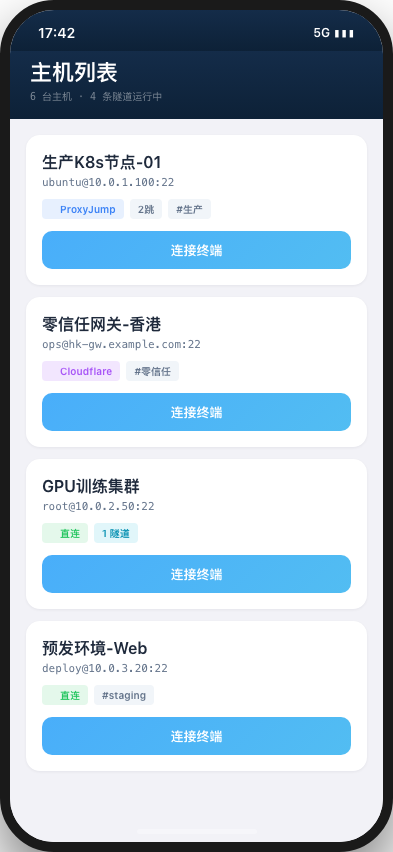
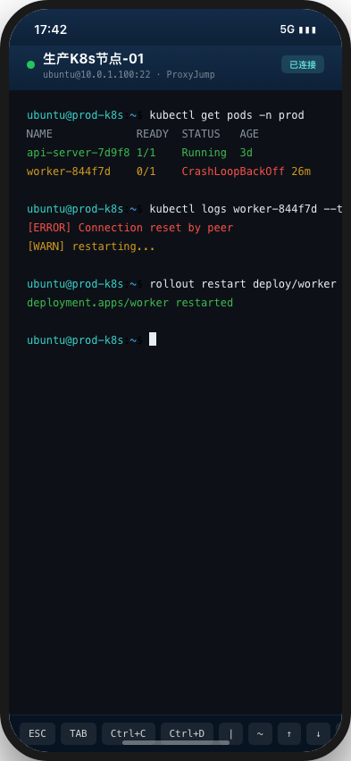

手机直连 · 跳板机多跳 · Cloudflare 零信任 —— 一切如常。
同一颗 Rust 内核，驱动 macOS App · iOS App · 终端 CLI 三种形态。

手机上也能原生跑 ProxyJump 和 Cloudflare Access。不是网页套壳，是 Rust 原生内核。
可视化配置跳板链，逐跳状态实时可见，堡垒机后的机器一次点击直达。
原生 WSS 通道封装 cloudflared access，Service Token 免浏览器，手机上直连零信任内网。
网络 → 网关鉴权 → SSH 认证，失败精确到阶段与跳数，排障不再靠猜。
私钥 / Token 存于系统安全存储，日志自动脱敏，信任链完整可复核。
解析 ~/.ssh/config，JumpHost 自动物化，转发规则直接导入，从 PC 无缝搬家。
只读分析终端输出，不发命令、不采集数据，帮你快速定位报错。
连接链路逐阶段上报，故障定位到具体跳数 —— 这是 HostShell 与其他客户端最不一样的地方。
| 你遇到的 | HostShell 给你的 |
|---|---|
| 堡垒机配置复杂，手机上基本没法用 | 🪜 ProxyJump 多跳可视化配置，逐跳状态实时可见 |
| Cloudflare 零信任环境手机无法直连 | 🛡️ 原生 WSS 通道封装 cloudflared access，Service Token 免浏览器 |
| 连接失败只显示 "Connection refused" | 🔍 分层诊断：网络 → 网关鉴权 → SSH 认证，失败精确到阶段 |
| 私钥散落各处不安全 | 🔐 私钥 / Token 不出系统安全存储（Keychain），日志自动脱敏 |
| 从 PC 迁移配置要手动重敲 | 📥 解析 ~/.ssh/config，JumpHost 自动物化，转发规则直接导入 |
出差路上、咖啡馆里、电梯中 —— 告警响起时，你离生产环境只差一次点击。

